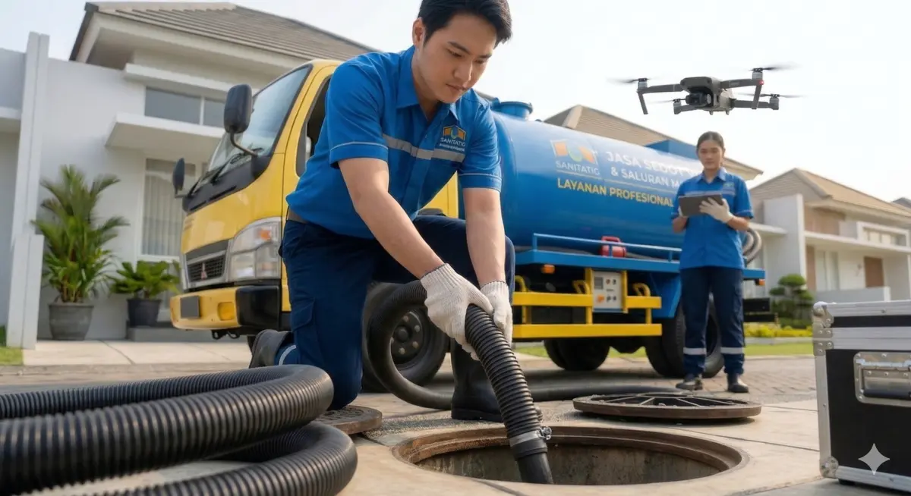

Pusat Sedot WC Jawa Barat - Cepat, Bersih, dan Tanpa Biaya Siluman

Curah hujan yang tinggi di wilayah Bogor sering kali membuat resapan air di tanah menjadi lambat, akibatnya septic tank di rumah Anda jauh lebih cepat penuh. Saat WC mulai mengeluarkan bau tak sedap atau saluran air tersumbat, Anda butuh penanganan CEPAT dan TUNTAS.
Pusat Sedot WC Jawa Barat (Cabang Bogor) hadir sebagai solusi kebersihan sanitasi Anda. Kami bekerja secara transparan, profesional, dan pantang menagih biaya tersembunyi setelah pengerjaan selesai.
Agar penanganan tepat sasaran, Admin kami akan memastikan 2 kondisi utama penyebab WC Anda bermasalah:
Kami menjamin tidak ada "tembak harga" di lokasi. Berikut adalah standar biaya kami untuk area Bogor dan sekitarnya (Sistem 1x Sedot / 1x Datang per Septic Tank):
| Layanan & Fasilitas Sanitasi | Biaya & Keterangan |
|---|---|
| Sedot Septic Tank (Per Tangki) | Rp 400.000 (Kapasitas tangki besar: 3 Kubik / 3000 Liter) |
| Fasilitas Selang Panjang | Mampu menjangkau gang sempit hingga 100 Meter. Gratis 20 Meter pertama! |
| Pelancaran Pipa Mampet (Tanpa Sedot) | Hubungi Admin untuk estimasi biaya pengerjaan pelancaran. |
1. Berapa lama armada sampai ke rumah saya di Bogor?
Tergantung titik kemacetan, namun kami selalu mengirim armada terdekat dari pool kami di area Anda. Jadwal kedatangan: Pesan pagi datang siang, pesan siang datang sore, pesan sore datang besok.
Armada kami tersebar di berbagai kota untuk memastikan respons darurat tercepat. Pilih cabang terdekat dengan lokasi Anda: